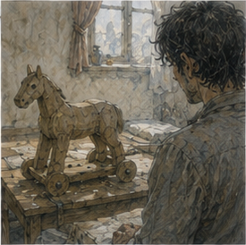

I woke with a wooden horse watching me. This was unsettling. Its head was too small. Its legs were too thick. The carver had given it one eye slightly higher than the other, which made it look suspicious of the washbasin. I liked it more in daylight.

Bad sign. My head hurt. Not badly. Cheap drink hurt differently at nineteen. Old Greg could drink. Old Greg had also spent years building the sort of tolerance that was probably just slow poisoning with better furniture. Current Greg had three cups and a headache. Useful. I drank water. Then more water. My hand was better.
The larger blister had flattened under Hessa's wrap. The smaller one had become less interesting. My beard still surprised me when I looked in the mirror. Better. Still my face. Probably. Someone knocked. I stared at the door. Nobody should know I was awake. Another knock.
“Greg?”
Woman. Not Hessa. Not Vessa. Not Octavia. I opened the door. The lodging keeper stood there holding a folded note.
“You have mail.”
“That's ominous.”
“You owe me nothing for it.”
“Less ominous.”
She handed it over.
“Boy left it.”
“What boy?”
“A boy.”
“Description?”
She looked at me.
“No.”
Fair. I closed the door. The note was Guild paper. Not Guild handwriting. Greg, If you are still interested in the stone, I have something worth showing you. Not urgent. Edrin.
Below that:
AFTER MIDDAY.
Good. Not urgent. She had written it. I read it again. Still not urgent. I put it on the table beside the horse. Then made breakfast. That was harder than it should have been. The note existed. I could feel it existing. Stone. Sinkstone. Three seized batches. Narrow behavior inside each sack. Different behavior between sacks. Processed kestrin. Darrowmere fragments not the same thing.
Dorrin sorting. Bale rejection. Holl's brass line. Kett. Varo. Testing. Rebatching. Silas Marris. I cracked an egg. Shell went into the bowl. I removed it. The note remained on the table. Not urgent. I ate two eggs and bread. Then washed the bowl. Then cleaned my knife. Then stopped. This was ridiculous. It was still morning. I had time.
I could go immediately and wait outside Edrin's room for three hours like a dog with a technical question. No. I put the note in my pocket. Then went outside. The city had already started without me. Good. I walked to the river. Not because I needed to. Because yesterday I had liked it. This was becoming suspicious.
The same low wall was occupied by an old man repairing a basket. I sat farther down. Boats moved. Workers shouted. A gull stole something and was pursued by a child with unrealistic confidence. I watched. My brain tried to turn the river into freight capacity. I refused.
Then it tried to identify which barges could carry treated stone without water exposure. I refused less successfully. Fine. The sinkstone existed. I was allowed to think about it. I was not required to chase it every minute. That distinction remained irritating. A courier came down the river road. Dark hair. Long stride. No. Not Sevren. I noticed anyway. Also irritating.
I stayed until the sun moved enough that sitting became hot. Then I went to the Guild. Not Edrin. Contract hall. I wanted to see if my name was still on the lane-support slip. It was not visible. Of course it was not visible. The availability notes lived behind a desk. I nearly asked. Then didn't. There were jobs on the board.
The pigs were gone. Someone had accepted them. I felt relief for reasons I could not defend. Alden was not in the yard. Jorren was not there. Berren was. He sat on a bench lacing his right boot. The wrap was gone. He saw me.
“Face.”
“What?”
“You changed it.”
I touched my beard.
“Apparently.”
“Better.”
“Thank you.”
“You look twelve.”
“Fuck you.”
He stood. Put weight on the foot. No wince. Good. I looked away before he could catch me checking. He caught me anyway.
“Still attached.”
“I can see that.”
“Want to spar?”
I looked at my hand. Then at his foot.
“No.”
He nodded. No insult. That was concerning.
“Why not?”
“Hessa said no pressure work yesterday.”
“That's magic.”
“Yes.”
“Sword isn't magic.”
“My hand.”
He looked.
“Ah.”
“Also your foot.”
“My foot's fine.”
“Then why are you lacing it like you're negotiating?”
He stopped. Looked at me.
“Fuck you.”
Good. He sat again. I sat beside him.
“What happened to the pigs?”
“What pigs?”
“Contract.”
“No idea.”
“Someone took it.”
“Probably.”
We sat. A pair of Copper adventurers crossed the yard carrying a rolled net between them. One was bleeding from the ear. Nobody seemed concerned. Berren watched them.
“You drinking tonight?”
“Maybe.”
“Jorren?”
“Maybe.”
“Tam?”
“Maybe.”
He looked at me.
“You went upstairs?”
“Yes.”
“How was it?”
“People.”
He laughed.
“That bad?”
“No.”
That answer surprised both of us. Berren finished his boot.
“I'm going east yard.”
“For?”
“Training.”
“With Alden?”
“No.”
Good. He stood.
“See you.”
“Probably.”
He left. Independent. I liked that too. This was getting out of hand. By midday I had successfully accomplished almost nothing. I bought lunch. A meat pie. Then another because one was not enough. Nineteen. Expensive metabolism. Worth it. After midday, I went to Edrin. Her workroom smelled the same. Stone dust. Oil. Something sharp from the reagent cabinet. The table was different.
Three shallow trays sat in a row. Each held dark gray pellets. Sinkstone. Seized stock. I stopped at the threshold. Edrin looked up from a ledger.
“You came.”
“You said worth showing.”
“I did.”
“Was that manipulative?”
“Yes.”
Good. She pointed to the stool. I sat. She did not begin. Instead she finished the line she was writing. Then another. Then sanded the ink. I waited. Progress. She closed the ledger.
“Before you ask, no, I don't know who made it.”
“I wasn't going to ask first.”
“What were you going to ask first?”
“Whether those are the three seized batches.”
“Yes.”
“Separated?”
“Yes.”
“Same sacks?”
“Representative samples from each.”
“Chain of custody?”
She looked at me.
“Yes.”
“Good.”
“You're getting worse.”
“Better.”
“Debatable.”
She moved the first tray forward.
“Batch one.”
The pellets looked ordinary. Gray. Some darker. Small broken pieces. Nothing that said magical contraband. She placed a mana bead beside the tray. Not touching. The bead glowed faintly. Then she slid three pellets into a narrow brass cup around it. The glow dimmed.
“Expected.”
“Yes.”
She removed them. The glow recovered. Then she placed three different pellets from the same tray. Same dimming. Not identical. Close. Third set. Close.
“Still narrow,” I said.
“Yes.”
She moved to batch two. Same procedure. Stronger dimming. Three sets. Again narrow within the batch. Batch three. Weakest immediate suppression. But Edrin did not stop. She removed the pellets. The bead stayed dim. I leaned forward.
“Retention.”
“Yes.”
“How long?”
“Depends batch.”
She handed me a sheet. Numbers. Good numbers. Not perfect. Batch one suppressed moderately, recovered quickly. Batch two suppressed strongest, retained some effect for several minutes. Batch three suppressed least during contact but left the longest residual effect after removal. I read it twice.
“These are different products.”
“Maybe.”
“Different treatment targets.”
“Maybe.”
“Different intended uses.”
“Maybe.”
“Different makers.”
“Maybe.”
I looked up.
“You enjoy this.”
“No.”
Lie. Small one. I read again. Within each batch, the spread was narrow. Between batches, behavior was meaningfully different. That part we already knew. The new part was the shape. Not simply more or less sinkstone. Different response profiles.
“Same raw stone?”
Edrin pushed another page toward me.
“Visually and by simple density, close enough that I wouldn't separate origin.”
“Close enough isn't same.”
“I know.”
“Mineral inclusions?”
“Not enough sample destruction authorized.”
Right. Evidence had owners. Even seized evidence.
“What did you find?”
She tapped the bottom of the sheet. I read. After three repeated exposure cycles, batch one drifted. Not much. Batch two drifted more. Batch three barely changed. I looked at the trays.
“Durability.”
“Or exhaustion.”
“Or release behavior.”
“Or something else.”
“Yes.”
She nodded.
“That's what was worth showing.”
I sat back. Three batches. Three profiles. Narrow inside. Different under repeated use. This was not random cheap treated shale thrown into sacks. Probably. I hated probably.
“Professional specification,” I said.
“Likely.”
“Not merely sorting.”
“Likely.”
“Could still be post-treatment sorting.”
“Yes.”
“Could be one process with three target ranges.”
“Yes.”
“Could be three processes.”
“Yes.”
“Could be three suppliers.”
“Yes.”
“Could be one supplier selling grades.”
“Yes.”
“Could be customer specification.”
“Yes.”
“Could be Silas Marris buying whatever was available and the sacks just happened to be internally consistent.”
Edrin looked at me.
“Less likely.”
“Good.”
Finally.
“How much less?”
“Enough that I would spend time on the alternatives first.”
There. Professional judgment. Not proof. Useful. I looked at batch three. Longest residual effect. Lowest immediate suppression. Interesting. Dangerous word.
“What happens if you mix them?”
“No.”
I looked at her.
“I was asking.”
“You were asking with your hands.”
My right hand had moved toward the trays. I put it in my lap.
“Fair.”
“We are not mixing seized evidence because you're curious.”
“I know.”
“Do you?”
“Temporarily.”
Vessa's word. Edrin's mouth twitched.
“Good.”
I looked at the three trays.
“Have you tested treated commercial kestrin against them?”
“Yes.”
I turned.
“What?”
She reached under the table. Fourth tray. Pale gray. More uniform in appearance.
“Where from?”
“Guild stores.”
“Supplier?”
“Bale.”
Of course.
“Which product?”
“Basic bed.”
Same class as mine.
“Lot?”
“Different from yours unless you've been stealing Guild stock.”
“I have not.”
“Good.”
She ran the bead test. Commercial Bale basic bed dimmed the bead weakly. Consistent enough. Recovery immediate. Repeated cycles showed little drift. Different. Clearly.
“Fine bed?”
“Not yet.”
“Why?”
“Because I have a budget.”
Right.
“Eight copper retail.”
“I know.”
“Could requisition.”
“I could.”
“You haven't.”
“No.”
“Why?”
“Because basic already answers the first question.”
Which was? I waited. She waited. I found it.
“Whether ordinary commercial treated kestrin naturally looks like seized stock.”
“Yes.”
“It doesn't.”
“Not this ordinary commercial product.”
Good correction. Not all commercial. This one. I wrote it. Edrin watched.
“You've been somewhere.”
“Many places.”
“Your questions are less bad.”
“Bale.”
“Ah.”
“Holl.”
“I know Holl.”
“Everyone knows Holl.”
“No.”
Fair.
“What did he tell you?”
I hesitated. Supplier privacy. Nothing secret about basic process categories.
“Bale buys treated stock, rejects, sorts, tests by line and bead, sometimes rebatches. Low variance means commercial tolerance, not identical pieces. Piece testing is possible but too expensive for cheap stock under ordinary methods.”
Edrin nodded.
“Reasonable.”
“He said unusually narrow individual behavior could come from better raw sorting, better process control, narrow source lots, more testing and rejection, post-treatment response sorting, or luck.”
“Also reasonable.”
“And blending for bulk behavior, but that wouldn't necessarily narrow individual pellets.”
“Yes.”
I looked at the seized trays.
“Your test uses groups of three.”
“Yes.”
“Have you tested individuals?”
“Yes.”
Of course. She handed me another page. The spread was still narrow. Not identical. Narrow. That mattered.
“Piece-level consistency.”
“Yes.”
“So blending alone doesn't explain it.”
“Correct.”
Unless pieces were individually sorted before blending. Still.
“Did Holl know Silas Marris?”
“As a trading company.”
Edrin's eyes sharpened.
“Reaction?”
“No.”
“Did you ask suppliers?”
“He refused.”
“Good.”
I looked at her.
“Why good?”
“Because I don't want you charming merchants into violating customer privacy for an investigation you don't own.”
There it was. I felt the objection before I formed the answer.
“I wouldn't charm.”
She stared. Fine.
“I might persuade.”
“Greg.”
“I know.”
“Do you?”
I looked at the trays. I understood the problem. Not fully. Enough to see the next useful questions. Who treated the stone? Who specified the ranges? Who tested individual pieces? Who paid enough to make that economical? Who needed batch three's strange low-suppression, long-residual profile? The questions were sitting there. I could go to Varo. I could ask Kett. I could ask Holl who bought fine bed.
I could ask Antonius what kinds of customers paid for controlled material. I could ask Silas Marris directly. That last thought was especially stupid. I could do all of it. Some of it might work. That was the dangerous part. Edrin watched my face.
“What?”
“Nothing.”
“That's never true.”
“I know what I would do next.”
“What?”
I told her. Not all of it. The legal version.
“Find processors who can produce narrow response ranges. Ask what controls cost. Ask whether they test before or after treatment. Ask what kind of customer pays for individual response consistency. Then compare capabilities to these profiles without naming the evidence.”
Edrin listened. Then said, “Good.” I waited.
“But?”
“No but.”
That was worse.
“What?”
“That's what I would do too.”
There. Permission-shaped object. My brain reached for it immediately.
“I can go to Varo.”
“No.”
I stopped. Edrin smiled. Not kindly.
“Why not?”
“Because I said your next questions are good. I did not assign them to you.”
There. Exact. Clean. I leaned back.
“That was fast.”
“You're predictable.”
“Unfair.”
“You stood up.”
I looked down. I had. Halfway. I sat fully. Edrin folded her hands.
“I am going to Varo.”
“Oh.”
“Tomorrow.”
“Why?”
“Because this is my investigation.”
“Yes.”
“And because if they know something, they are more likely to answer a Guild warder with evidence authority than a nineteen-year-old Bronze who looks like he's trying to buy rocks.”
“I do buy rocks.”
“I know.”
“How?”
“Pell complained.”
“What?”
“Not seriously.”
That was unacceptable.
“What did he say?”
“No.”
“Edrin.”
“No.”
I hated competent people. She gathered the test sheets. I watched.
“You asked me here because?”
“You had been thinking about consistency before I had.”
“That's not an answer.”
“It is.”
“You wanted my interpretation.”
“Yes.”
“And?”
“And you gave me useful questions.”
“Which you are going to ask.”
“Yes.”
I sat with that. This was exactly the kind of thing Old Greg would have hated. Someone else taking the next step. Using my thinking. Owning the action. Potentially getting the answer first. Good. I hated it. Also good.
“Can I come?”
Edrin considered.
“No.”
I felt the disappointment immediately. Not strategic. I wanted to see Varo. I wanted to hear the answers. I wanted to watch the process. I wanted the rocks. Probably not the rocks. Some of the rocks.
“Why?”
“Because I don't know what kind of conversation it will be.”
“I can stay quiet.”
She laughed. Actually laughed.
“That is insulting.”
“I can.”
“You can for perhaps six minutes.”
“Seven.”
“No.”
I looked at the trays again.
“Will you tell me what you learn?”
“If I can.”
“That's vague.”
“Correct.”
“Because investigation.”
“Yes.”
“Privacy.”
“Yes.”
“Evidence.”
“Yes.”
“Annoying.”
“Yes.”
I sighed.
“Fine.”
Edrin started returning the trays to sealed boxes. I stood. This time because the meeting was over. At the door she said, “Greg.” I turned.
“If you independently encounter information about controlled sinkstone production in the course of normal work, tell me.”
“That was already the rule.”
“Yes.”
“Why repeat it?”
“Because you just tried to turn my trip to Varo into your trip to Varo.”
Fair.
“Normal work.”
“Normal work.”
“Not manufactured work.”
She pointed at me.
“Especially that.”
I left. Outside, the afternoon felt brighter than necessary. I wanted to go to Varo. Badly. Three streets south from Bale. Not far. I knew where it was now. I could walk past. That was not going. I started walking. South. This was suspicious. I told myself I was going home. Home was not south. I adjusted. West. Then stopped. This was pathetic.
A cart passed carrying empty clay jars. A woman shouted at someone from an upstairs window. A dog slept in a patch of sun. Nobody cared whether I went to Varo. I cared. That was enough to make the decision difficult. I turned north. Guild. No. That was substitution. I turned east. River. Also substitution.
I stood in the intersection until a driver shouted at me.
“Move!”
I moved. Toward food. Reliable. I bought fried dough with onions. Too hot. Burned my tongue. Good. While I ate, someone bumped my shoulder.
“New face.”
Sevren. I turned. He was carrying a courier tube under one arm and half a pear in his hand.
“Old face.”
“Less beard.”
“Yes.”
He looked at it critically.
“Better.”
“Everyone says that.”
“Then you should trust the evidence.”
“No.”
He bit the pear.
“Working?”
“Not currently.”
“Good.”
“What does that mean?”
“I need help.”
Of course.
“With what?”
He held up the courier tube.
“Nothing important.”
“That is not reassuring.”
“I need to return a ladder.”
I stared.
“Why do you have a ladder?”
“I don't.”
“Then how are we returning it?”
“We have to get it first.”
I looked at him. He ate pear.
“Whose ladder?”
“Octavia's.”
That seemed unlikely.
“She owns a ladder?”
“No.”
“Sevren.”
“It's complicated.”
“Is it?”
“No.”
Good.
“Where?”
“North cloth yard.”
“Where does it go?”
“West courier shed.”
“Why?”
“Because I borrowed it.”
“From the west courier shed.”
“Yes.”
“And left it at the north cloth yard.”
“Yes.”
“Why?”
“Roof.”
I waited. He waited. This was not enough information. It was also probably all the information required.
“When?”
“Now would be good.”
I looked south. Varo existed. Edrin was going tomorrow. Not mine. Sevren had a ladder. Apparently.
“Fine.”
He smiled. Not triumphant. Just pleased. We walked north.
“What was the roof?”
“Loose route board.”
“You climbed onto a roof to fix a route board.”
“Yes.”
“Why?”
“It was hanging.”
“Was that your job?”
“No.”
I looked at him. He looked at me.
“Don't.”
“I didn't say anything.”
“You made the face.”
Everyone knew the face. Terrible.
“Did you fix it?”
“Yes.”
“Did you break anything?”
“No.”
“Did leaving the ladder there create a problem?”
“Only for the people who own the ladder.”
“Which is a problem.”
“Yes.”
“And now you're fixing it.”
“Yes.”
I considered.
“You're very annoying.”
“I've heard.”
We reached the north cloth yard. The ladder leaned exactly where he said. A woman at the gate saw Sevren.
“You came back.”
“Yes.”
“Miracle.”
“Temporary.”
She looked at me.
“Who's this?”
“Greg.”
“Why?”
“Ladder.”
That was apparently enough. We took one end each. The ladder was long. Not heavy. Awkward. Sevren took the front. I took the back. We walked. At the first corner, he turned too sharply. My end hit a post.
“Stop.”
He stopped.
“You need wider.”
“I know now.”
“You knew before.”
“I knew conceptually.”
I laughed despite myself. We adjusted. Second corner clean. Third corner, a fruit cart blocked half the lane. I stopped. Sevren looked back.
“Can fit.”
“No.”
“Yes.”
“Not with the awning.”
He looked. Measured with eyes. Then lifted his end.
“Over?”
“No.”
“Why?”
“Because my end will hit the sign.”
He looked back. Right. He lowered it. We backed up. Took another street. Greg model one. Sevren zero. I enjoyed this too much. At the next lane, a delivery cart blocked us. Sevren did not stop.
He ducked his end under the cart's rear rail, rotated the ladder through the open space behind the wheel, and said, “Up.” I lifted. The ladder passed diagonally through a gap I had already categorized as unusable. We were through. He looked back.
“Conceptually.”
“Fuck you.”
Sevren one. Greg one. Good. We returned the ladder. The courier shed clerk looked at Sevren.
“Again?”
“Returned.”
“You borrowed it yesterday.”
“Yes.”
“You said one hour.”
“Time passed.”
The clerk pointed at a chalk board. Sevren's name was written under EQUIPMENT.
Beside it:
LADDER.
He took the chalk and erased it.
“Resolved.”
The clerk looked at me.
“He does this.”
“I know.”
“You've known him how long?”
“Not long enough.”
Sevren handed me the rest of the pear. I looked at it.
“Why?”
“I'm done.”
“That is not how gifts work.”
“It's how pears work.”
I ate it. We left. At the corner Sevren said, “Drink?” I considered. My tongue hurt from fried dough. My head had only recently stopped hurting from last night.
“No.”
He nodded.
“Food?”
“I ate.”
“Walk?”
“Where?”
He shrugged. There. No objective. I almost said no. Then didn't.
“Fine.”
We walked. Not toward Varo. That helped. Sevren told me about a courier horse named Bishop who had learned to stop at a bakery even when the route did not include the bakery. I told him that was training failure. He said it was initiative. We argued for six streets. Neither changed position.
At one point he stopped to help a woman lift a crate onto a cart. No discussion. No optimization. Lift. Done. She thanked him. He kept walking. I noticed. Did not make a philosophy. Mostly. At the river split, Sevren looked north.
“I have a delivery.”
“Now?”
“Yes.”
“You forgot?”
“No.”
He tapped the courier tube. Right. His actual life.
“Where?”
“North quay.”
“Need help?”
“No.”
Good. He started away. Then turned.
“Tomorrow?”
“What?”
“Nothing yet.”
“That is not a plan.”
“I know.”
“Then why ask?”
“To see if you're busy.”
I thought about Edrin going to Varo. Not with me. Pell might have regulator work. Guild might call. Hessa might want the hand checked. Jorren existed. Alden existed. Everything existed.
“I don't know.”
Sevren nodded.
“Good.”
He left. Same answer. Different person. I watched him go for perhaps two seconds too long. Then went home. The wooden horse was still beside the washbasin. I put Edrin's note beneath it so it would not blow away. The horse was not heavy enough for this job. It slid. I repositioned it. Still bad. I found a cup. Better. The note stayed.
Edrin would go to Varo tomorrow. Without me. That remained irritating. I could live with irritating. Probably. I sat on the bed. My body was tired in an ordinary way. My hand barely hurt. My beard itched at the jaw. My tongue was burned.
I had spent the day learning something important about sinkstone and returning a ladder. The ladder had been more fun. I did not write that down.